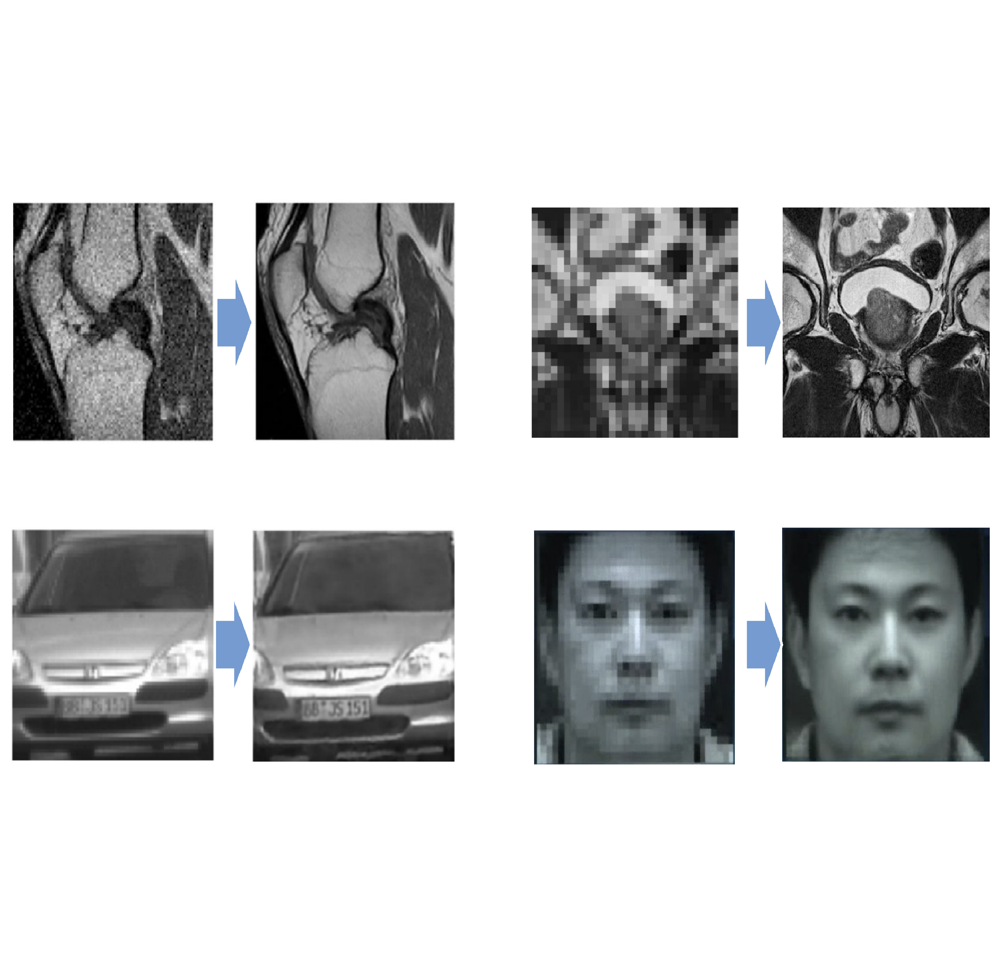
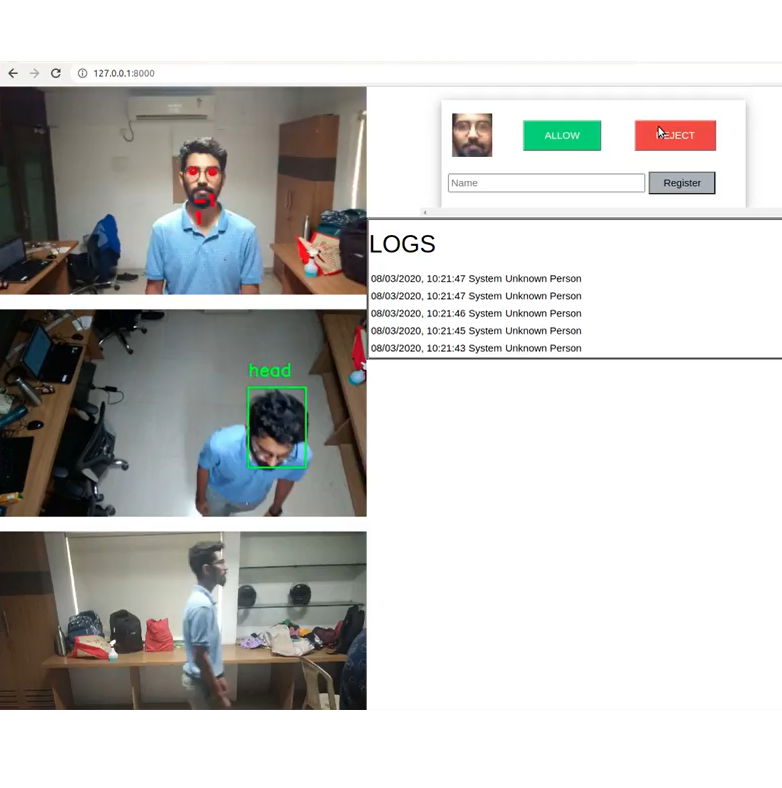
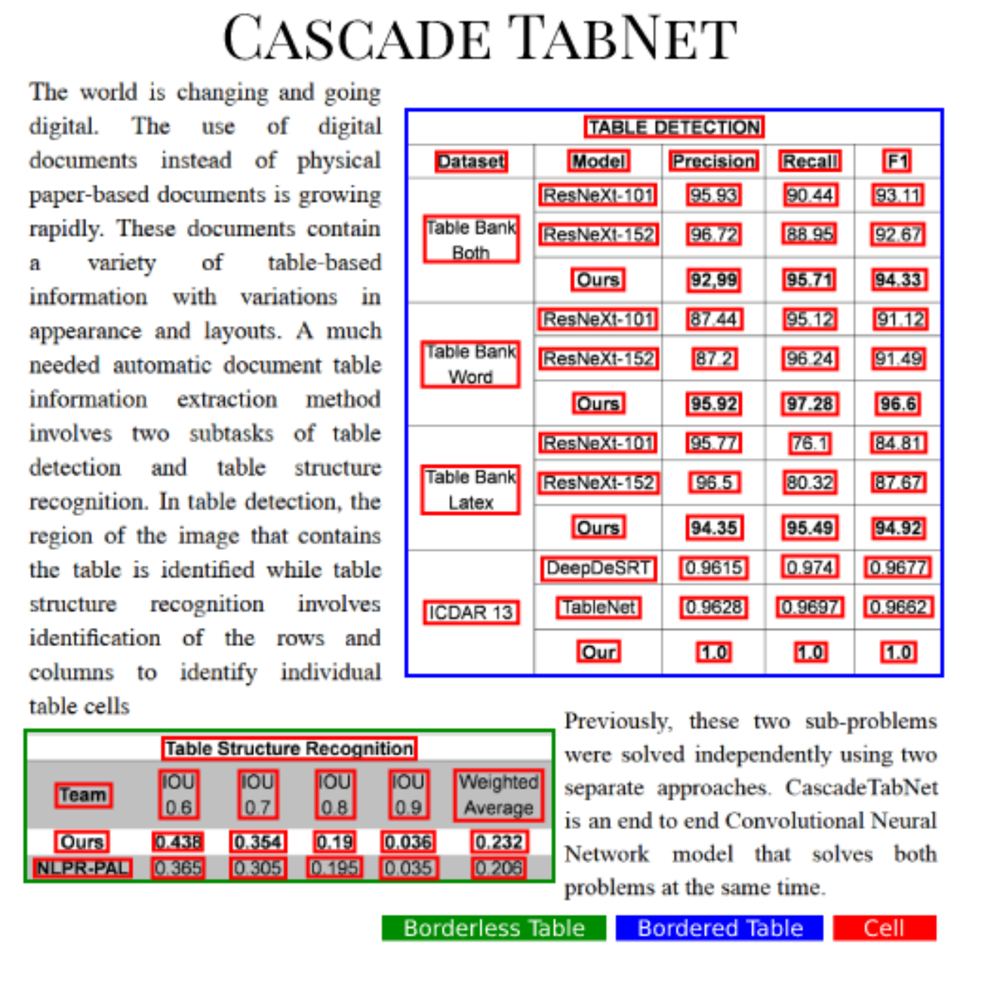
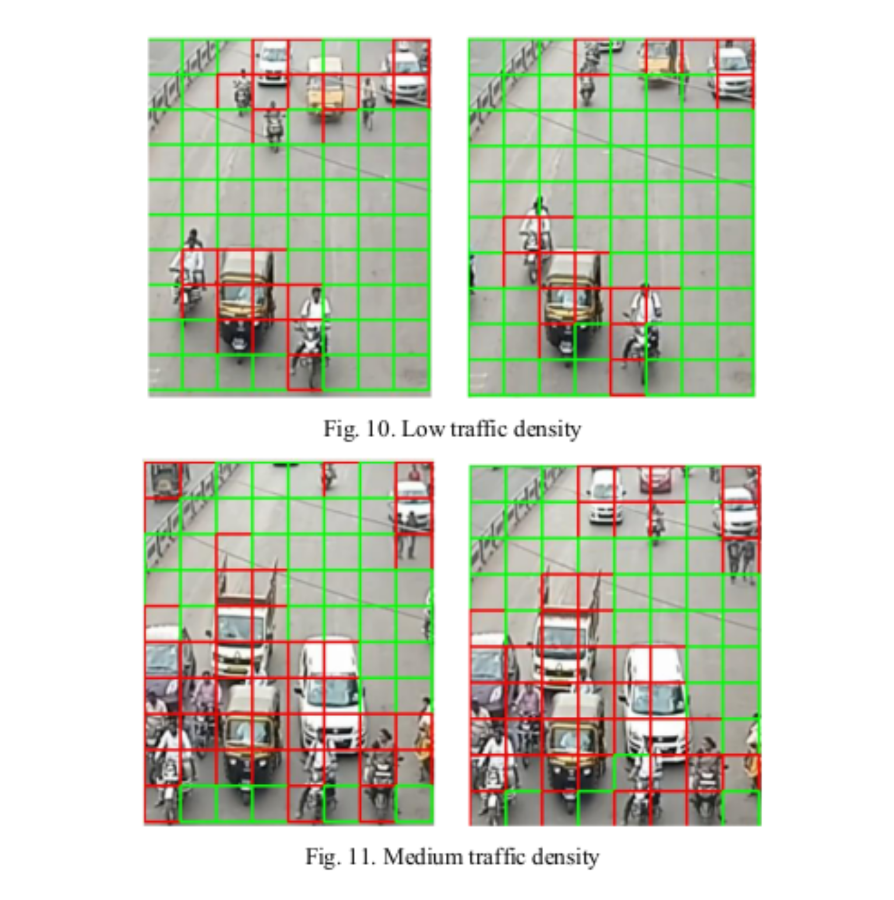
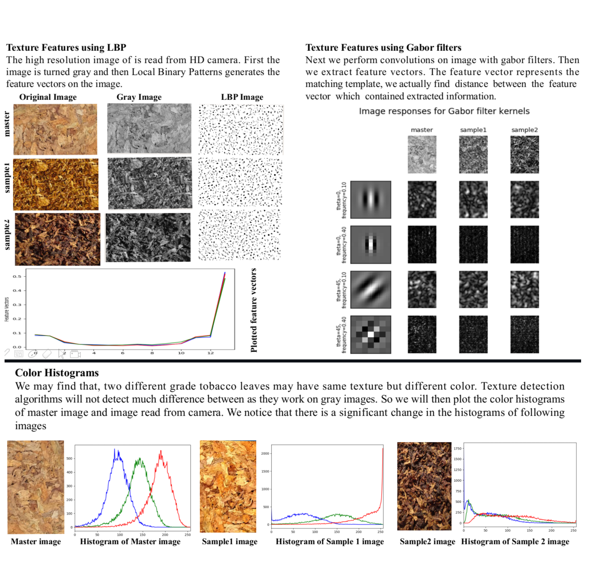

Github Projects

Blind Image Super-Resolution
[ GitHub ]
- Apr 2022
During my tenure as a Graduate Data Science Researcher at Viasat (The Data Mine), I focused on enhancing super-resolution (SR) models, which transform low-resolution images into high-resolution counterparts. However, traditional SR models often fail to generalize to real-world scenarios due to a bias towards the training data's specific degradation types. Addressing this, I explored blind SR techniques, designed to tackle images degraded by unknown processes, thus producing more robust and adaptable high-resolution outputs. This project involved a comprehensive comparative analysis of two advanced blind SR methods and a well-established non-blind SR approach. Each method, initially trained in unique environments, posed challenges for direct comparison. My primary goal was to mitigate this by retraining and evaluating all models under a uniform setting, ensuring a fair and insightful comparison.

Virtual Assistant: Listen, Understand and Respond
[ GitHub ]
[ Youtube ]
- May 2021
For my Bachelor's Final Year project, I developed a virtual assistant akin to Alexa, Google Home, and Siri, focusing on airport and flight customer service. Utilizing open-source libraries like NVIDIA's Flowtron for versatile text-to-speech capabilities, Joint-BERT for intent classification, and SpeechRecognition for voice input, I integrated these with an SQL database containing comprehensive flight information. Additionally, I crafted an automatic face animation feature that responds in real-time to vocal frequencies. The system proficiently handles five types of user queries, demonstrating robustness and accuracy in user assistance.

Video based Real-time Human Authentication
[ GitHub ]
[ Videos ]
- Aug 2020
Selected for the Smart India Hackathon 2020 finale, this project introduces a dynamic human authentication system using three orthogonal cameras (front, top, side) at a building's entrance. It authenticates individuals based on facial features, gait, and posture. The front camera analyzes faces and body dimensions, the side camera monitors gait, and the top camera detects unauthorized entry attempts. It incorporates advanced techniques for face detection, recognition, anti-spoofing, gait analysis, and pose estimation. Deployed as a web application using Django, SQLite, and AJAX, it offers features like dynamic registration, video archiving, activity logs, user profiling, and real-time monitoring. Additionally, a Python library facilitates the integration of cutting-edge facial analysis models.

CascadeTabNet: Table detection and structure recognition
[ GitHub ]
[ Paper ]
[ Youtube ]
- May 2020
Published at CVPR 2020, CascadTabNet is an innovative method for transforming tabular data in images into a digital format. It employs a single Convolutional Neural Network (Cascade Mask R-CNN HRNet) for simultaneous table detection and structure recognition. This end-to-end approach segments tables and identifies their structural cells in one step, with a rule-based algorithm refining the results. Trained on public datasets and enhanced with novel image augmentation techniques, it achieved state-of-the-art accuracy in table detection and structure recognition. The project was developed using the mmdetection open-source library.

AI-based Smart Vehicular Traffic Junction
[ GitHub ]
[ Paper ]
[ Youtube1 ]
[ Youtube2 ]
- Sep 2019
Presented at the IEEE PuneCon 2019, this project developed an intelligent traffic junction system. Utilizing four IP cameras, one for each direction, the system employs a novel algorithm combining image processing and machine learning to gauge traffic density. Managed by a Raspberry Pi board, it adjusts traffic signals in real-time based on this data, optimizing the duration of green lights. Additionally, the Pi connects to a remote server, hosting a web application that allows for remote traffic monitoring, control, and real-time logging for historical analysis.

Image based tobacco grade classification system
[ GitHub ]
- Apr 2019
Chosen for the Smart India Hackathon 2019 Grand Finale, this project aimed to automate tobacco grading, a task traditionally requiring expert human judgment. Using an AI system, it predicts tobacco leaf grade from images by analyzing color, texture, and ripeness. Classical image processing algorithms and machine learning techniques, specifically SVMs, were employed to extract features and achieve over 90% accuracy, outperforming deep learning models limited by data scarcity. The solution was implemented as a local application with a PyQT user interface, designed specifically for ITC Ltd.
Other Github Projects